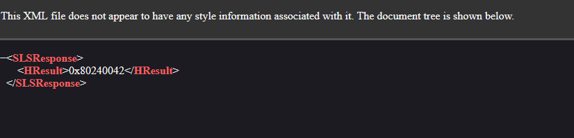

windows 8.x store revival follow up
I mentioned in my last post that I would post again if I succeed.
I didn't succeed, but I found something interesting: the GUID changed after installing Legacy Update to try to fully update the system.
it changed to a GUID that actually has some archives, although I haven't been able to get the store to accept them, either.
nowadays this GUID returns this:
according to this microsoft learn page, it means WU_E_UNKNOWN_SERVICE.
basically, the service was completely deleted after Windows 8.1's EOS.
even worse, the only archive just gives me these errors:
2025-08-19 13:55:15:034 816 70 Misc WARNING: WinHttp: WinHttpQueryHeaders(WINHTTP_QUERY_CONTENT_TYPE) for WINHTTP_QUERY_ETAG failed. error 0x80072f76
2025-08-19 13:55:15:034 816 70 SLS Failed to get the ETAG value with error 80072f76; ignoring...
2025-08-19 13:55:15:034 816 70 SLS Content Type for Response: application/octet-stream
2025-08-19 13:55:15:034 816 70 Misc WARNING: WinHttp: WinHttpQueryHeaders(WINHTTP_QUERY_CONTENT_TYPE) for X-Microsoft-SLSClientCache failed. error 0x80072f76
2025-08-19 13:55:15:034 816 70 SLS FATAL: SLS:CSLSDownloader::GetUrlContent: GetCustomResponseHeaderValue failed with 0x80072f76.
2025-08-19 13:55:15:034 816 70 SLS GetSLSExpireSecsInADay SecsInADay = 86400.
2025-08-19 13:55:15:034 816 70 SLS FATAL: SLS:CSLSDownloader::GetUrlContent: GetLastModifiedHeader failed with 0x80072f76.
2025-08-19 13:55:15:034 816 70 SLS GetResponse succeeded. The file was downloaded.
2025-08-19 13:55:15:034 816 70 SLS Validating response for service 117CAB2D-82B1-4B5A-A08C-4D62DBEE7782 ...
2025-08-19 13:55:15:034 816 70 Misc Validating signature for C:\Windows\SoftwareDistribution\SLS\117CAB2D-82B1-4B5A-A08C-4D62DBEE7782\sls.cab with dwProvFlags 0x00000080:
2025-08-19 13:55:15:034 816 70 Misc Microsoft signed: NA
2025-08-19 13:55:15:034 816 70 Misc Infrastructure signed: Yes
2025-08-19 13:55:15:034 816 70 Misc Validating signature for C:\Windows\SoftwareDistribution\SLS\117CAB2D-82B1-4B5A-A08C-4D62DBEE7782\TMP1682.tmp with dwProvFlags 0x00000080:
2025-08-19 13:55:15:050 816 70 Misc Microsoft signed: NA
2025-08-19 13:55:15:050 816 70 Misc Infrastructure signed: Yes
2025-08-19 13:55:15:050 816 70 SLS FATAL: SLS Response was invalid for service 117CAB2D-82B1-4B5A-A08C-4D62DBEE7782 - HTTPStatusCode[200]
although there are some errors about missing headers. maybe I just need to add them.